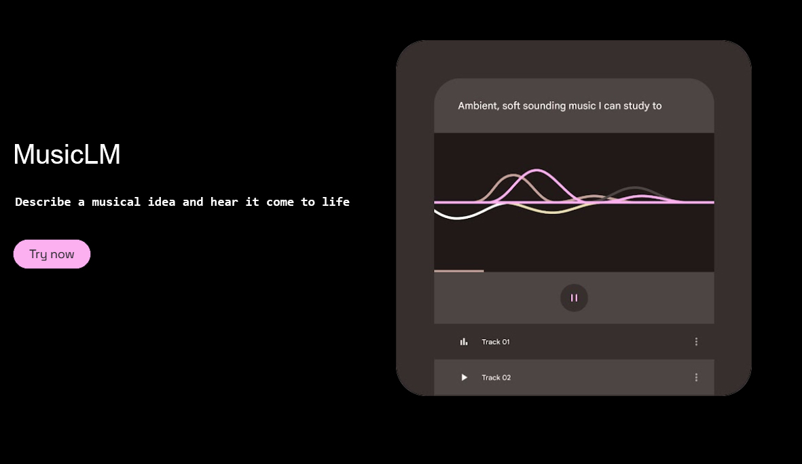
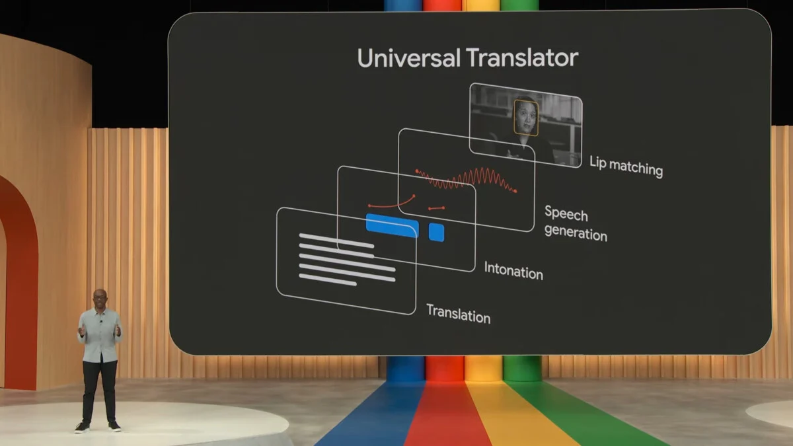
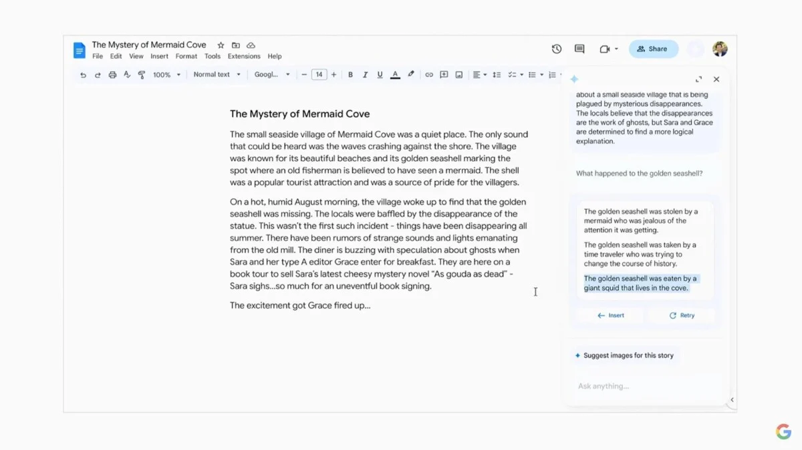
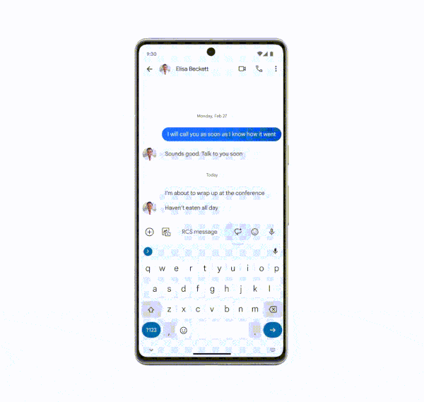
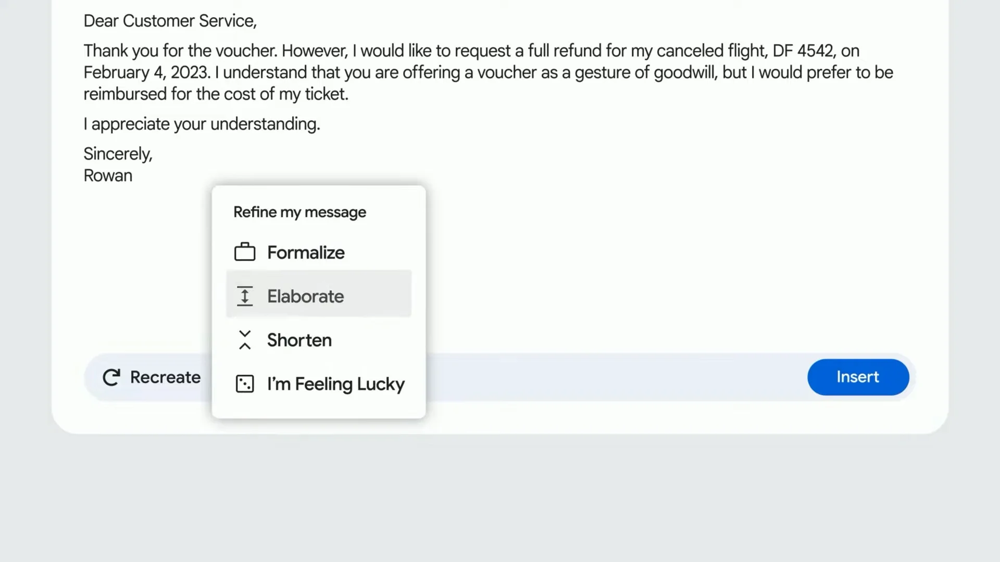
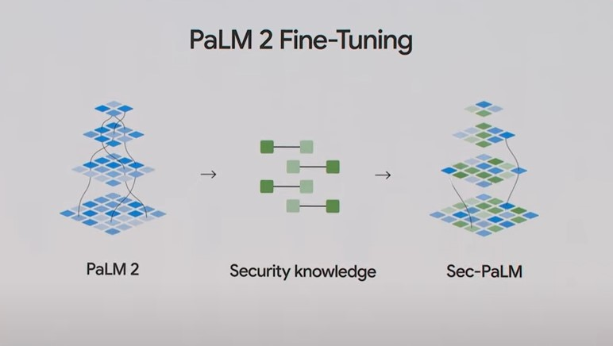
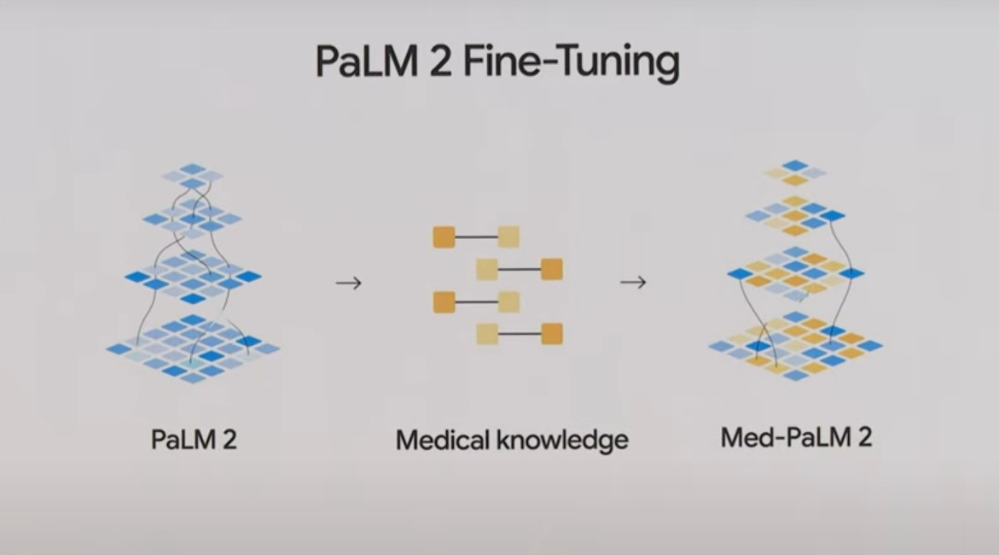
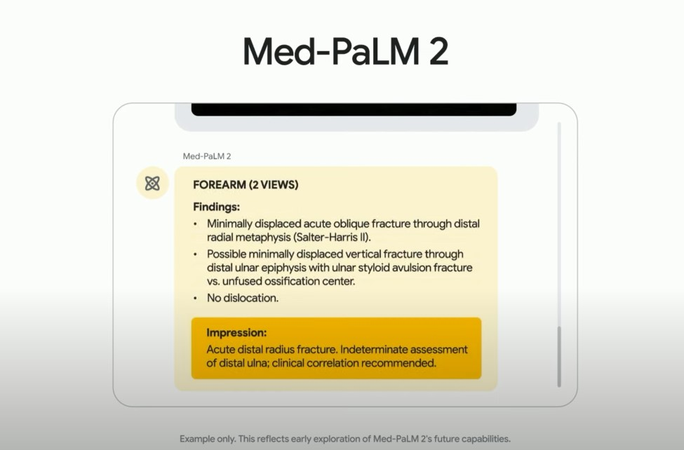
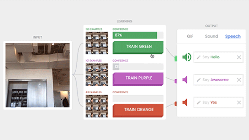

-
Copilote à portée de main -
Basé sur plusieurs sources et relié directement sur le web -
Cite les sources -
Plusieurs styles d'écritures ("Créatif" ; "Équilibré" ; "Précis") -
Informations récentes (alors que chatGPT 3 possède des informations allant jusqu'à septembre 2021) -
Simulation d'√©motions avec des √©mojis : üòä -
Basé uniquement sur des sources -
Qualité et longueur de production de texte inférieur à chatGPT -
Encore quelques imprécisions -
Créer une photo de qualité -
Créer une ambiance et un monde alternatif -
Réveler des pensées artistiques pour générer une image -
Éviter de mettre trop d'argent dans les objectifs -
Pas la possibilité de capturer de vrais souvenirs telles que des photos de groupe ou des moments particuliers -
Difficulté en intérieur -
Manque de précision sur la réalité -
l’apprentissage supervisé -
l’apprentissage non supervisé -
l’apprentissage par renforcement -
Usurpation de l'identité: usurper l’identité d’une personne en lui faisant dire ou faire quelque chose qu’elle n’a jamais fait (comme avec make-a-video), et ces vidéos truquées seront quasiment indétectables. Aux États-Unis, une mère a reçu un appel d’un homme qui prétendait détenir sa fille et qui lui a demandé une rançon. La mère hésitante a prévenu la police, un peu plus tard on découvre lorsque l'enquête a été résolu que l’homme avait utilisé une IA pour cloner la voix de la fille et faire croire à la mère qu’il avait sa fille en otage et qu'en réalité sa fille se portait très bien. L’histoire est terrifiante et montre comment l’IA peut être utilisée pour des activités criminelles. Voir l'article complet de futura-sciences -
le piratage de voitures autonomes : s’emparer des commandes d’un véhicule pour s’en servir comme arme. Ex : attaque terroriste -
hameçonnage sur mesure (phishing) : augmenter l’efficacité du "phishing" visant à collecter des informations sécurisées. -
piratages des systèmes contrôlés par l’IA : perturber les infrastructures en causant par ex une panne d’électricité généralisée. -
fausses informations rédigées par l'IA : écrire des articles de propagandes par exemple (chatgpt)
1. Qu'est-ce que l'intelligence artificielle ?
"C'est la capacité conférée par les humains aux machines,
de mémoriser et d'apprendre sur la base de l'expérience,
de penser, de créer, de parler, de juger et de décider"
2. Son assistance au quotidien

L'IA est notamment présente dans les assistants vocaux, tout comme Google, Siri, Bixby, Alexa ou Celia, ces IA nous permettent de nous aider dans notre vie quotidienne comme par exemple éteindre les lumières à 20h si on a une maison connectée, ou lui demander la météo d'aujourd'hui en l'appelant simplement par son nom en disant "hey google" ou "dit siri" pour les plus connues, Google et Siri.
Informations supplémentaires
Vidéo de frandroid sur les assistants vocaux :
Frandroid sur les assistants vocaux :
3. L'IA dans la santé

En Grande-Bretagne des chercheurs ont étudié la capacité de l’IA dans la prédiction de crise cardiaque chez un
patient. C’est-à-dire qu’elle est capable d’accumuler et de regrouper une grande quantité d’informations
médicales. Donc elle est bien plus efficace que les humains pour établir des diagnostics.
Les avantages : les médecins pourront se concentrer sur leurs patients à risque, tandis que les autres éviteront
un traitement inutile.
Ce système d’IA a été nommé Watson et mis au point par un IBM. Grâce à Watson il a non seulement
confirmé des
traitements prescrits par des cancérologues mais il a aussi trouvé 30 % d’options thérapeutiques supplémentaires
que les médecins n’avaient pas identifiées.
Il y a aussi les Xénobots : ce sont des robots vivants nés de l’association de l’IA et de
la
biologie. Constitués à partir d’une cellule-souche de peau et cœur d’une grenouille du genre xénopus. Pour le
moment on leur a trouvé comme utilité de les programmer pour soigner des organes malades
4. L'IA dans l'art
"Midjourney" est actuellement l'IA la plus puissante dans l'univers artistique, cette IA se trouvant sur discord permet de transformer les mots (appelés "prompts") en oeuvres d'art, nous pouvons lui demander n'importe quel style artistique et n'importe quelle résolution. La v5 sortie récemment permet de réaliser des œuvres si réalistes avec lesquelles nous ne pouvons pas faire la différence avec une photo.

Voici ci-joint l'une de mes créations avec Midjourney :
5. L'IA dans les vidéos

"Make a video" est une IA développée par google et meta permettant de réaliser des vidéos en suivant le même procédé que Midjourney (prompts). Il suffit de lui demander : "A teddy bear making a portrait" pour générer un extrait de video ci-dessus. Mais make-a-video a été suspendu car on pouvait créer trop de deep-fake (fausses vidéos) que j'expliquerai dans les dangers de l'IA.
6. L'IA dans la musique
"Magenta" est un logiciel développé par google permettant de faire de la musique de tous genres. Cette IA peut également servir d'aide à la création d'un morceau de musique.
7. Chatgpt
ChatGPT (Chat Generative Pretrained Transformerest = Chat Transformateurs pré-entraînés génératifs) est un
prototype d'agent conversationnel utilisant l'intelligence artificielle, développé par OpenAI et spécialisé dans
le dialogue.
ChatGPT est capable de générer des réponses à des questions, de compléter des phrases, de
traduire des textes, de coder en n'importe quel langage de programmation, d'écrire des articles et de tenir des
conversations avec des humains.
Pour visualiser la puissance de cette IA chat GPT-3 comporte 175 milliards
de paramètres et chat GPT-4 comporte 100 trillions (soit 100 000 milliards) de paramètres, ce qui correspond au
nombre de paramètres d'un cerveau humain.
Cette IA a les capacités nécessaires pour prétendre être
l'intelligence artificielle la plus puissante à ce jour !
8. Microsoft bing
Bien que ChatGPT soit un modèle d'intelligence artificielle puissant, bing a récemment sorti son IA en collaboration avec l'entreprise d'openAI. Son nom : "le nouveau bing", rien d'impressionnant pour l'instant, mais il présente autant d'avantages que d'inconvénients que chatGPT et concurrence le navigateur google chrome !

Avantages par rapport à chatGPT :
Inconvénients par rapport à chatGPT :
Comme vous l'avez compris, bing sera plus dédié à la recherche que chatGPT, certains internautes le nomment "le chatGPT 4 gratuit" car comme il est relié au web il ne manquera jamais des actualités alors qu'il fallait payer pour accéder aux dernières informations avec chatGPT 4. Pour conclure, ces 2 modèles d'intelligences artificielles sont très différents et il faudra bien choisir suivant le besoin nécessaire, bing pour la recherche et chatGPT pour une réponse plus élaborée.
9. Les innovations de google 2023-2024

La Google I/O, cet événement annuel où Google nous dévoile ses derniers tours de magie. Cette année, la conférence du 10 mai n'a pas dérogé à la règle, avec l'intelligence artificielle en vedette. Voici en détails les 11 démos les plus bluffantes de cette édition 2023.
1. Le photoshop le plus rapide de tous les temps grâce à la toute nouvelle IA de google photos :


Le nouvel outil d’édition de Google Photos, Magic Editor, vous permettra de faire des retouches importantes comme améliorer le ciel, effacer les personnes en arrière-plan, et même déplacer un objet en recréant une partie qui a été découpé par le cadrage de la photo comme nous pouvons le voir sur la photo numéro 2, ou le banc et les ballons de l'enfant ont été recréés !
2. Le détecteur d’images créées en IA générative :
Face à la prolifération d’images modifiées par l’IA ou générées par des outils comme Midjourney ou Stable
Diffusion, Google propose une solution : la fonction « About this image ».

Ainsi, Google pourra
identifier l’origine des images, comme il le fait avec les fake news. Il est capable de retrouver l’origine
d’une photo, pas uniquement en cherchant des indices sur la photo, mais en cherchant l’image originale dans sa
base de données.
3. Google Maps et sa « Vue immersive pour les itinéraires » :
Préparez-vous à voir la planification de votre itinéraire sous un tout nouvel angle. La nouvelle fonctionnalité
de Google Maps compile toutes les informations nécessaires (trafic, pistes cyclables, intersections, parking…)
en un seul endroit.

En utilisant la vision par ordinateur et l’IA, Immersive View fusionne des milliards d’images
Street View et aériennes pour créer un modèle numérique du monde. C’est comme une répétition générale avant le
jour J.
4. MusicLM, l’outil d’IA qui transforme le texte en musique :
Marre des playlists toutes faites ? Alors que google avait créé l'IA magenta dédié pour la musique, google a sorti une IA encore plus puissante pour la musique, son nom : "MusicLM".

Tapez simplement « soulful jazz for a dinner party » et demandez à l’outil de vous créer plusieurs versions de
la chanson. Voici un extrait d'une musique réalisé par musicLM :
Ce générateur de musique rentre en phase de test publique, on peut s’inscrire sur la liste
d’attente.
5. Universal Translator, le doublage
Présenté lors de la conférence I/O de Google, l‘Universal Translator ambitionne de transposer des vidéos d’une langue à une autre, tout en préservant l’intonation et l’atmosphère d’origine. Il s’agit en fait d’un traducteur à synchronisation labiale.

Cela signifie que cet outil ne se limite pas à la conversion de l’audio d’une langue à une autre, il reproduit aussi la voix, l’intonation et les mimiques du locuteur. Vous avez bien compris : la vidéo traduite ajuste les mouvements labiaux du locuteur pour correspondre aux expressions propres à la langue cible.
6. Sidekick, l’assistant personnel pour Google Docs :
Le nouveau panneau Sidekick de Google, présenté lors de cette conférence, s’intègre dans un panneau latéral de Google Docs. Il lit et traite en permanence l’ensemble de votre document pendant que vous écrivez, offrant des suggestions contextuelles qui se réfèrent spécifiquement à ce que vous avez écrit.

Par exemple, si vous écrivez une histoire pour enfants, Sidekick peut suggérer ce qui pourrait arriver ensuite
dans le récit. L’outil peut également générer des images basées sur le contenu du document, aidant ainsi à
illustrer l’histoire au fur et à mesure de son écriture. Google a également démontré sa capacité à résumer des
conversations écrites, à proposer des notes pour le présentateur, et plus encore.
Toutes ces fonctionnalités font partie de la suite Duet AI de Google, tout juste rebaptisée. C’est une solution
comparable à ce que Microsoft a présenté avec ses fonctionnalités alimentées par l’IA Copilot.
7. Tailwind, l’outil de bloc-notes alimenté par l’IA :
Si vous avez toujours rêvé d’un assistant personnel qui organise et résume automatiquement vos notes, le Project Tailwind est fait pour vous.

Sélectionnez des fichiers sur Google Drive et l’outil crée un modèle d’IA, ainsi qu’une interface personnalisée pour parcourir les notes et les documents.
8. Project Starline, la téléconférence en 3D :
Finies les réunions Zoom où l’on peine à distinguer les visages de ses collègues. Avec le dernier prototype du Project Starline, Google propose une cabine vidéo de téléconférence 3D.
Les améliorations notables inclus moins de matériel, comme un nombre réduit de caméras et un plus grand recours à l’IA et au Machine Learning pour générer des images en trois dimensions.
9. Google peut écrire vos textes à l’aide de l’IA :
La fonctionnalité Magic Compose, vous permet de réécrire des textes dans différents styles plus positif, plus professionnel ou même à la manière de Shakespeare pour les littéraires nostalgiques.

Cette fonctionnalité sera intégrée à Google Messages. Vous commencerez par rédiger votre message de la manière habituelle. Ensuite, vous choisirez le ton que vous souhaitez donner au message et Magic Compose adaptera le texte en fonction.

Concernant Gmail, Google a dévoilé une fonctionnalité franchement impressionnante. Baptisée Help Me Write (Aide-moi à écrire), son principe est aussi simple que son nom l’indique : en cliquant sur un bouton situé au bas de la fenêtre de courrier électronique, vous pouvez demander à Gmail de formuler une réponse pour vous.
10. Présentation de paLM 2 :
paLM 2 est une intelligence artificielle fonctionnant sous google bard (qui sera étudié en profondeur sur le sujet suivant) dédié à la programmation. Cette IA excelle dans tous les langages de programmations tel que python, java, c++, html-css-js, et bien plus encore... paLM possède également la capacité de transformer un code python en code c++, et ce n'est pas tout, en plus de pouvoir programmer cette IA peut aussi résoudre n'importe quel problème de mathématiques !
paLM 2 possède plusieurs modèles qui procurent d'excellentes capacités de base dans une large gamme de tailles. Google les a nommés : "Gecko" - "Otter" - "Bison" - "Unicorn".

Gecko est si léger qu'il peut fonctionner sur n'importe quel appareil mobile et est assez rapide pour de grande applis interactives sur un terminal, même hors-ligne. Les modèles de paLM 2 sont plus puissants en logique et en raisonnement grâce à une large formation sur des domaines scientifiques, mathématiques et également sur plus de 100 langues pour pouvoir aider les développeurs du monde entier !

11. Présentation de a. sec-paLM et de b. med-paLM 2 :
a. Sec-paLM : En plus de paLM 2 google a développé sec-paLM, une IA dédié pour la sécurité. Sec-paLM est en réalité une version de paLM 2 affiné pour les cas d'utilisation liés à la sécurité. Il utilise donc l'ia pour mieux détecter les scripts malveillants et peut aider les experts en sécurité à comprendre et à résoudre les menaces

b. med-paLM 2 : Il y a donc aussi med-paLM 2 une IA cette fois ci dédié dans le domaine des connaissances médicales. med-paLM 2 permet de diviser par 9 les raisonnements inexacts par rapport au modèle, il s'approche ainsi des performances des experts cliniciens qui ont répondu aux mêmes questions !

En fait, med-paLM 2 a été le premier modèle linguistique à obtenir un "niveau expert" sur des questions d'examens d'aptitude médicale et d'être à la pointe de la technologie. Google travaille encore aujourd'hui sur l'ajout de fonctionnalités de med-paLM 2 afin qu'il puisse synthétiser les informations de l'imagerie médicale. Imaginez un collaborateur IA qui aide les radiologues, interprète les images et communique les résultats.


Google labs
En somme, les innovations de google présentées ici appartiennent aux technologies du bloc google labs. Pour tout dire, google labs propose les principaux prototypes d'IA et offre la possibilité de rejoindre la "liste d'attente" pour être informé lorsque les expériences seront mises à disposition dans notre pays.
Informations supplémentaires
Conférence de google I/O sur toutes les innovations :
Résumé en 10min sur l'évenement de la google I/O :
10. Google bard
Après ChatGPT et Bing, c'est Google Bard qui se lance dans l'intelligence artificielle pour devancer OpenAI et Microsoft qui avaient sorti leur modèle d'IA bien avant Google. Mais alors qu'est-ce que cette intelligence artificielle a de plus par rapport aux deux autres IA.
▶ Une IA qui peut lire et comprendre les images :
En effet Bard est à la pointe de la technologie, il peut lire n'importe quelles images alors que les autres
modèles comportaient encore beaucoup d'imprécision.
▶ Une IA comme Bing, disponible partout :
Tout comme Bing, google Bard est disponible à n'importe quelle recherche google pour pouvoir donner des
informations supplémentaires. Bard peut également être disponible sur google docs, slides, sheets, gmail et dans
le domaine de la programmation comme vu précédemment dans les innovations google.
▶ Une IA qui peut afficher des images :
ChatGPT et Bing manquaient tous les deux d'une dernière chose, google a compris d'où venait le problème : le
chatbot Bard voit arriver une nouvelle manière d'afficher les informations, plus proche de la recherche que l'on
connaît. Désormais, dans ses réponses, Bard peut intégrer des images issues de Google Images pour clarifier les
informations et donner plus envie aux utilisateurs d'utiliser le modèle d'intelligence artificielle de
google.
▶ Une IA qui peut générer des images :
OpenAi avait la possibilité de générer des images grâce à Dall-E, de même pour Bing, mais pour Bard c'est une
toute nouvelle IA générative d'image : Adobe Firefly, de l'entreprise professionnelle "Adobe", mais quoi de plus
à part le prestige par rapport aux autres ? Et bien au lieu de changer d'une application à l'autre, la
génération d'images sera directement intégré au chatbot Bard.

En somme, Google Bard est sûrement le modèle d'IA le plus avancé. De plus il est désormais disponible aujourd'hui le 13/07/23 après une longue attente du monde entier, nous pouvons le tester tout de suite à l'adresse bard.google.com. Malgrè cette sortie, il reste encore quelques fonctionnalités qui ne sont pas disponible en France comme exposer une image avec un prompt pour lui faire générer une réponse basé sur l'illustration qu'on lui a fournit. Néamoins il est quand même possible d'y avoir accès en modifiant les paramètres du compte google pour le mettre en anglais car ces fonctions ne seront que disponible en anglais.
Informations supplémentaires
Voir la video Frandroid sur google Bard :
Voir la présentation de google bard en version copilote :
Voir les dernières nouveautés et mises à jour de Bard
11. Paragraphica
Paragraphica est un projet artistique sans caméra, ni objectif. Cette machine reprend le dessin des appendices
qui permettent aux taupes étoilées de sentir leur environnement. Paragraphica ne voit rien, l’objet « imagine »
l’extérieur à partir d’un prompt.
Voici une modélisation 3D du site du créateur de paragraphica que vous pouvez manipuler :
Et voici un extrait vidéo sur la présentation de paragraphica :
Ce projet vise donc à collecter différentes données, tel que la localisation, l'heure, la météo, etc... puis à
l'aide de différentes IA, il pourra générer une photographie de haute qualité ressemblant à peu près au lieu. Il
est également possible de choisir l'angle de vue, les emplacements proches, le cadrage et bien plus encore. De
plus, lorsque cette machine analyse les données il propose un prompt du genre un texte à trous que l'on peut
modifier pour donner une ambiance, une météo, ou encore de réaliser une image complétement modifiée de ce que
nous voyons. Cette machine crée donc un monde alternatif qui correspondra en partie à la réalité mais sans
aucune trace de celle-ci. Un faux monde que Paragraphica imagine à votre place pour créer de faux souvenirs.
Voici des exemples de réalisations :

Avantages :
Inconvénients :
Paragraphica est donc un appareil complexe qui peut servir à de nombreuses réalisations comme des images pour des jeux vidéos ou des films, cela reste donc pour l'instant un objet dédié aux photographies à l'apparence fictive.
Informations supplémentaires
Lien vers la presentation de paragraphica avec les explications de son créateur :
Lien vers le site des créations du concepteur de paragraphica :
12. Comment sont programmées les IA

Les IA sont notamment programmées en Python, C++, Java qui sont des langages de programmation très utilisés.
13. Est-ce que l'IA peut penser ou apprendre :
L’IA comporte 3 types d’apprentissages :
L’apprentissage supervisé est un programme informatique qui met en confrontation l’IA à un ensemble de données qui ont été déjà utilisées par son entraînement. Grâce à cela l’IA pourra s’appuyer sur ses connaissances pour la couleur de la pomme elle sera verte ou rouge et pour celle de l’orange elle sera orange.
L’apprentissage non supervisé est de confronter l’IA à des objets qui ne sont pas dans sa base de données. Donc, l’IA va devoir apprendre par elle-même, par exemple combien y a t’il d’espèces ? Elle ne l’a jamais appris mais elle sait qu’il y en a de différentes couleurs comme la poule et le lapin, donc elle pourra en conclure qu’il y a 2 espèces différentes par leur couleur.
L’apprentissage par renforcement : AlphaGO, l’IA de Google utilise cette technique d’apprentissage. Celle-ci implique de dire au programme ce qu’on veut qu’il fasse, et de laisser ensuite agir par lui-même. Au fur et à mesure qu’il progresse vers l’objectif voulu, il est mieux noté et ses actions positives sont ainsi renforcées. Par ex dans les échecs, l’IA apprend ses coups qui la font perdre et ne les utilisera plus à l’avenir, mais en revanche les coups gagnants elle les retient et les utilisera à l’avenir.
14. Google Teachable Machine

Nous avons vu précédemment les trois types d'apprentissages principaux d'une IA : l'apprentissage supervisé, non supervisé, et par renforcement. Ces trois modèles d'apprentissage font partie du groupe du "machine learning", mais qu'en est t-il du "deep learning" (aussi dit apprentissage profond), un autre prototype d'apprentissage important que je n'ai pas évoqué jusqu'à présent ?

Une IA à la disponibilité de tous est capable de représenter ce type d'apprentissage : Google Teachable Machine. En effet, ce modèle d'IA utilise le deep learning pour créer des modèles de classification basés sur des réseaux de neurones. C’est une forme de machine learning plus avancée et plus adaptée à certaines tâches. Cette IA est donc capable de nommer des choses à partir de plusieurs éléments que nous lui fournissons (images, vidéos, sons), nous pouvons également la connecter à des appareils intelligents tout comme des téléviseurs ou des lampes. Imaginez qu'après l'avoir entrainée, on puisse allumer la lumière du salon en un claquement de doigts ! Mais elle est capable de bien plus que cela, après plusieurs entraînements de reconnaissance de sons, on a donné naissance à une IA du même modèle que celui de teachable machine capable de reconnaître le bruit que fait chaque touche du clavier. Avec un taux d'erreur de 5% uniquement cette IA pourrait à l'avenir deviner vos mots de passe....
15. Est-ce que l'IA nous remplacera un jour
Ce n’est pas de la science-fiction. Une femme robot vient d’être nommée à la tête d’une grosse entreprise
chinoise. L’un des leaders chinois du jeu vidéo, NetDragon Websoft.
Ce personnage est donc Tang Yu, une femme robot qui a commencé par occuper le poste de PDG
tournant de la
société.
Avantage : elle peut travailler 24h/24h sans être payée !
Et puis, il y a eu un tableau créé par l'IA midjourney qui a fait polémique dernièrement en gagnant un concours
d’art dans la catégorie "art numérique" aux États-Unis.
Un internaute a écrit :
"La mort du métier d’artiste se déroule en ce moment sous nos yeux. Si les
métiers créatifs ne sont pas à l’abri des machines, alors même les métiers à hautes compétences risquent de
devenir obsolètes. Que nous restera-t-il alors ?"
16. Les dangers de l'IA

L'IA a su faire de grandes avancées dans de nombreux domaines tels que la médecine, l'art, etc...
Mais
entre de mauvaises mains elle peut servir à de fins criminelles ou à la désinformation,
les menaces sont
graves :
17. Conclusion
Pour conclure, l’IA est un sujet passionnant. Cela est à la fois fascinant et effrayant. L’IA sera omniprésente dans les années à venir et c’est pour cela qu'il faudra être habitué à vivre avec l'intelligence artificielle.